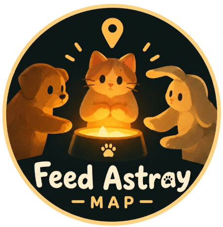

Welcome Back
Sign in to submit spots, vote, and join the community
or email access
Your reset link was verified. Choose a new password for your account.

Sign in to submit spots, vote, and join the community
Your reset link was verified. Choose a new password for your account.